Why AI Changes Everything for Enterprise Architecture
The Shift You’re Feeling
If you’ve been working in enterprise architecture for any meaningful stretch of time, you’ve lived through several tectonic shifts. You were there when mainframes gave way to client-server models, when on-prem data centers started migrating to the cloud, and when the monolith was carved up into microservices. Each of those transitions was significant in its own right — entire careers were reshaped, vendor landscapes were redrawn, and organizations spent years and millions of dollars adapting. But here’s the thing that made each of those transitions manageable: the fundamental job of the enterprise architect didn’t really change. You were still designing systems that needed to be reliable, scalable, secure, and aligned with what the business was trying to accomplish. The tools changed, but the craft remained.
AI is a different kind of shift, and if you’ve been paying attention, you can feel it. It doesn’t simply add a new box to your architecture diagrams or introduce another integration point to manage. It changes what the boxes do. When you place an AI-powered component into your architecture, you are introducing something that doesn’t follow deterministic logic the way a traditional service does. It makes predictions. It generates content. It sometimes gets things spectacularly wrong. And perhaps most unsettling for architects who think in terms of versioned releases and well-defined interfaces, it improves with data rather than code changes. That’s a fundamentally different contract between you and the component you’re responsible for.
This chapter is about understanding why that matters — not at the level of algorithms and model weights, but at the level of architectural thinking. By the end of it, you should have a clear mental model for how AI changes the decisions you make every day and, just as importantly, how it doesn’t.
What’s Actually New
Non-Deterministic Components
In traditional enterprise systems, determinism is the bedrock upon which everything is built. You send the same input into a function, a stored procedure, or a REST endpoint, and you get the same output back. Every single time. That predictability is what makes testing possible, what makes debugging tractable, and what allows you to write SLA guarantees with a straight face. When a customer calls and says something went wrong, you can trace the request through your systems, reproduce the issue, and fix the root cause. The universe of your system is knowable.
AI-powered components break that contract in a way that’s both exciting and deeply uncomfortable. You send the same input into a language model or a prediction engine, and you get back something that’s probably similar to what you got last time — but not necessarily identical. The model might phrase its answer differently. It might surface a nuance it missed before. It might hallucinate a fact that sounds plausible but is entirely fabricated. And on its best day, it might produce something genuinely brilliant that no deterministic system could have generated. This isn’t a bug to be fixed; it’s the fundamental nature of how these systems work, and your architecture needs to be designed around it.

If it helps to have a mental model, think of it this way: replacing a traditional component with an AI-powered one is a bit like replacing a stored procedure with a human expert. The expert is usually right, often creative, and occasionally produces insights that surprise everyone. But the expert is also sometimes wrong, can be inconsistent across similar situations, and needs a support structure around them — peer review, escalation paths, quality checks — to ensure the overall system remains trustworthy. Your architecture needs to provide that same support structure for AI components.
Data as a First-Class Architectural Concern
In the world of traditional enterprise architecture, data is something you model during design, store in databases, and move between systems through ETL pipelines, APIs, and message queues. It’s important, of course — nobody would argue otherwise — but it’s often treated as the plumbing of the system rather than the system’s primary asset. You care about data schemas, data governance policies, and data integration patterns, but the data itself isn’t what makes your application intelligent. The code does that.
In AI-driven architecture, that relationship is inverted. The data is what determines how well your AI components perform, what biases they carry into production, and how quickly they improve over time. A brilliantly engineered model trained on poor data will produce poor results, while a relatively simple model trained on high-quality, well-curated data can deliver remarkable performance. This means that your data architecture can no longer be a plumbing system whose job is simply to move information from point A to point B. It needs to become a refinement system — one that cleans, labels, versions, and continuously improves the quality of data flowing through it. Data pipelines in an AI-enabled enterprise aren’t just about availability and throughput; they’re about the ongoing cultivation of your organization’s most strategically important asset.
The Build vs. Buy Calculus Changes
Every enterprise architect has a well-developed instinct for the classic build-versus-buy decision. You weigh the cost of building something internally against the cost and constraints of purchasing a vendor solution, factoring in considerations like maintainability, vendor lock-in, time to market, and alignment with your organization’s core competencies. It’s a framework you’ve applied hundreds of times.
With AI, that familiar two-option decision expands into something more nuanced: build vs. fine-tune vs. prompt vs. buy.

You might build a model from scratch if you have proprietary data and unique requirements, but that demands significant investment in ML engineering talent and infrastructure. You might take a pre-trained foundation model and fine-tune it on your domain-specific data, which is less expensive but still requires meaningful technical capability. You might skip model training entirely and simply prompt a commercial large language model with carefully designed instructions, which is fast and flexible but gives you less control and creates a dependency on an external provider. Or you might buy a fully packaged AI solution from a vendor, which is the fastest path but often the least customizable. Each of these options carries radically different implications for cost, control, capability, latency, data privacy, and long-term maintainability — and the right answer will vary not just across organizations, but across use cases within the same organization.Continuous Learning vs. Versioned Releases
Traditional software ships in versions. You develop a release, test it against acceptance criteria, deploy it to production, and then monitor it until the next release cycle begins. The software doesn’t change its behavior between releases unless something is broken. That model has served us well for decades and provides a level of predictability that operations teams and compliance officers deeply appreciate.
AI systems don’t necessarily follow that pattern. Models can improve continuously as they’re exposed to more data, which sounds wonderful until you realize that they can also degrade over time — a phenomenon known as model drift. The world changes, user behavior shifts, new edge cases emerge, and a model that performed beautifully six months ago starts making increasingly poor predictions. This means that your release management, testing, and monitoring strategies all need rethinking. You need to be able to detect when a model’s performance is drifting, trigger retraining pipelines when it does, validate the retrained model against your quality benchmarks, and deploy the updated model without disrupting the broader system. It’s a fundamentally different operational model than what most enterprise architecture teams are accustomed to, and it requires new tools, new processes, and new organizational capabilities.
What Stays the Same
Now for the good news — and this is something that tends to get lost in the breathless hype around AI transformation. The vast majority of your architectural thinking still applies. The principles you’ve spent years developing and the frameworks you’ve built your career around don’t suddenly become irrelevant. They become more important.
Non-functional requirements still matter enormously. Your stakeholders still care about latency, throughput, availability, and security — and in many cases, AI components introduce new challenges in all of those areas. A language model that takes eight seconds to respond might be technically accurate, but it’s going to create a terrible user experience. A recommendation engine that’s available 99% of the time but goes down during peak shopping hours is going to cost the business real money.
Integration patterns still apply. AI components need to talk to the rest of your enterprise through APIs, events, queues, and batch processes, just like everything else. The patterns you already know — request-reply, publish-subscribe, saga, circuit breaker — are all still relevant. You’re just applying them to components that behave a little differently than what you’re used to.
Governance, if anything, is more important than ever. When systems make autonomous decisions that affect customers, employees, and partners, the need for oversight, auditability, and accountability doesn’t decrease — it intensifies. And if your organization operates in a regulated industry, the governance requirements around AI can be significantly more demanding than what you’ve dealt with for traditional systems.
And stakeholder management? Still roughly eighty percent of the job. You’re still the person who needs to translate between business leaders who want results, data scientists who want resources, compliance officers who want guardrails, and operations teams who want stability. That hasn’t changed, and it isn’t going to.
The real difference is that you now need to extend all of these frameworks — your NFR checklists, your integration playbooks, your governance models — to cover AI-specific concerns. It’s an expansion of your existing craft, not a replacement of it.
The Enterprise Architect’s Advantage
Here’s something that most AI books won’t tell you, and it’s perhaps the most important point in this entire chapter: Enterprise Architects are uniquely positioned to lead AI transformation. Not data scientists. Not ML engineers. Not the consultants selling AI strategy workshops. Enterprise Architects.
That might sound like a bold claim, so let me explain why I believe it. Data scientists can build excellent models — that’s their craft, and they’re very good at it. ML engineers can deploy those models into production, building the infrastructure needed to serve predictions at scale. But neither of those roles is trained to think about how an AI component fits into the sprawling, messy, politically complex reality of a large enterprise. That’s your job.
You know how to integrate new capabilities into existing systems without breaking the things that are already working. You’ve done it with every technology wave that’s come before, and you understand the thousand small decisions that determine whether a new component becomes a productive member of the enterprise ecosystem or an expensive headache that nobody trusts.
You know how to navigate the organizational politics of technology adoption. You understand that the real obstacles to AI adoption are rarely technical — they’re organizational. Turf wars over data ownership, disagreements about accountability, fear of job displacement, competing priorities across business units. You’ve navigated these dynamics before with cloud migrations, ERP implementations, and platform consolidations. The terrain is familiar even if the technology is new.
You know how to design governance frameworks that enable innovation without letting chaos take root. This is perhaps the most critical skill in the AI era, because the pressure to move fast with AI is immense, and the consequences of moving fast without guardrails are severe.
And you see the full picture — from data pipelines to model serving to user experience to regulatory compliance to cost management. Nobody else in the organization has that breadth of perspective.
Your job isn’t to become a data scientist. You don’t need to be able to derive backpropagation or tune hyperparameters. Your job is to become the architect who knows how to design systems where AI and traditional components work together reliably, governed appropriately, and in service of real business outcomes.
Real-World Example: The Insurance Company
Let me share a story that illustrates why architectural thinking matters so much more than model accuracy. A large insurance company decided to use AI to streamline their claims processing workflow. They brought in a talented data science team, gave them access to historical claims data, and asked them to build a model that could classify incoming claims automatically. After several months of development, the team produced a model that could classify claims with 94% accuracy. They were thrilled. They presented the results to leadership and, understandably, declared victory.
Then the Enterprise Architect started asking questions — the kind of questions that nobody else in the room was thinking about, because nobody else in the room had the breadth of perspective to even know they needed asking.
What happens to the six percent of claims that are misclassified? In an insurance context, a misclassified claim isn’t a minor inconvenience — it can mean a legitimate claim being denied or a fraudulent claim being paid out. The architecture needed a human review workflow with clear escalation paths, SLA tracking, and feedback loops so that reviewers’ corrections could be used to improve the model over time.
How does this AI component integrate with the existing claims management system, which was built fifteen years ago and runs on a technology stack that predates the current generation of APIs? The team needed to design an API gateway and an event bus to mediate between the new AI service and the legacy system, handling format transformations, error conditions, and retry logic.
What happens when insurance regulations change — as they inevitably do — and the model needs to be retrained to reflect new classification rules? The architecture needed an MLOps pipeline capable of retraining the model, validating its performance against a test suite that included the new regulatory scenarios, and deploying the updated model with minimal disruption.
Who is accountable when a customer challenges an AI-driven claims decision? The architecture needed an audit trail that could reconstruct exactly why the model made a particular classification, along with an explainability layer that could present that reasoning in terms that regulators and customers could understand.
And what about data lineage? Where did the training data come from, how was it selected, and were there biases in the historical claims data that could lead the model to systematically disadvantage certain groups of policyholders? The architecture needed a data governance framework that tracked provenance, identified potential biases, and ensured compliance with fairness requirements.
The model, impressive as it was, turned out to be roughly ten percent of the total solution. The architecture — the integration, the governance, the operational processes, the human-in-the-loop workflows — was the other ninety percent. And that’s the pattern you’ll see repeated throughout this book.
Key Takeaways
- AI introduces non-deterministic components into your architecture, which means your designs must explicitly account for uncertainty, variability, and the possibility of being wrong — something that traditional architecture rarely had to contend with.
- Data becomes your most important architectural asset in an AI-enabled enterprise, not merely something you store and shuttle between systems, but something you actively cultivate, curate, and treat as a strategic investment.
- The familiar build-versus-buy decision expands into a more nuanced spectrum of build, fine-tune, prompt, or buy — each with its own implications for cost, control, capability, and long-term maintainability.
- Your existing enterprise architecture skills — integration design, governance, stakeholder management, systems thinking — are not diminished by AI; they are your single biggest advantage in leading AI transformation.
- The architect’s job is to design the system that surrounds the model, not the model itself, and that system is almost always where the real complexity and the real value reside.
Companion Notebook
 — Compare a
rules-based classifier with an LLM-based classifier on the same task.
See the difference in behavior, consistency, and failure modes.
— Compare a
rules-based classifier with an LLM-based classifier on the same task.
See the difference in behavior, consistency, and failure modes.